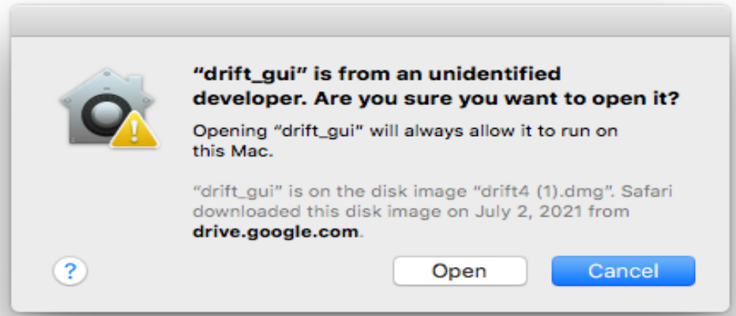
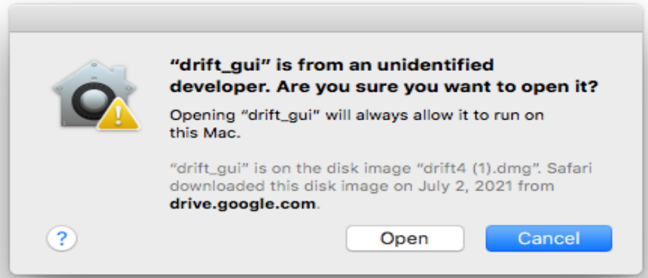
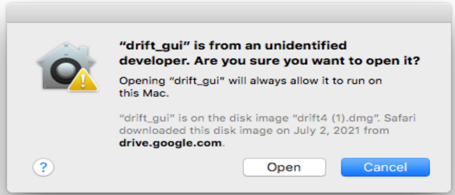

Install and open
Gentle. Gentle must be installed and open in order for Drift to work.
Open the Drift application.
When first running Drift after opening the dmg application, Mac might warn you against running it.
When that happens, simply click “Cancel” (in Big Sur shown in the picture on the left) or “Ok” (in older versions of Mac shown in the picture to the right) to close the window. Then
right-click or press the “Ctrl” key while left-clicking the Drift icon to bring up the “Open” option, and click on that.
This time, an option to open the application should appear on the warning window, and you can click “Open” to run Drift.

Click “Open in Browser.” The software should open on your default browser.
Note: Before running an audio file through Drift, it is helpful to have a correct transcript of the recording, or a (manually) corrected transcript from Gentle. This will help generate
more accurate calculations.
Adding a file
Drag an audio file into the Drift interface. Or, you can click the “choose files” button and find the file by browsing on your computer.
Paste in the corrected transcript generated from Gentle into the transcript box.
Select “set transcript”. Drift should align the transcript with the audio file, and also perform calculations of the Voxit prosodic measures.
Arranging Files
You can add a file to the dashboard by clicking on it from the sidebar. You can hide a file from the dashboard by clicking on it again
You can rearrange the order of the files by dragging them along the sidebar to see a desired order
Voxit Prosodic Measures
If you press play, the audio recording will play, and you can see a vertical bar called a “razor” move within the pitch contour. You can also press the spacebar to play or pause the most recent
document (either the document most recently opened or the last one to have been played by clicking the “play” button, whichever was the most recent action). The overview along the top and the graph at the center will
scroll according to where the razor moves to during playing.
If you hover over the graph, a tag will appear on a razor indicating pitch and time. You can click on the graph to set the razor to a certain point in time.
The Voxit prosodic measures for the whole region appear below the pitch contour.
You can also select a smaller region within the large audio file, and Drift will perform the calculations on the selected region. You can do this by dragging along the overview at
the top.
Downloading the audio files
Click the three dots above each recording, and you can download the calculations as a .csv, .mat, or .txt file.
Copy the Voxit prosodic measure table to your clipboard by hovering over the table and clicking the “Copy to Clipboard” button that appears.
Download the graph as a PNG by hovering over the download icon in the top right corner of the graph.
Deleting Files
You can delete a file by hovering over the three dots above each recording, and clicking on the “Delete Audioclip” button
You can delete all of the audio files by hovering over the three dots on the left sidebar, then clicking on the “Delete All Audio” button.


 
